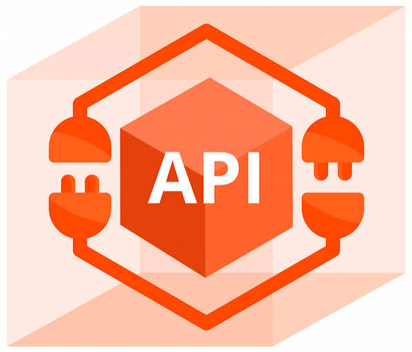

01Conectan diferentes sistemas
Una API permite que aplicaciones desarrolladas con tecnologías distintas puedan intercambiar información siguiendo reglas establecidas.
Datos interesantes sobre las APIs
Descubre algunos datos interesantes sobre la forma en que las aplicaciones se comunican.
Las APIs están presentes en muchos servicios digitales que utilizamos diariamente.

01Una API permite que aplicaciones desarrolladas con tecnologías distintas puedan intercambiar información siguiendo reglas establecidas.
 02
02
Una aplicación puede enviar una solicitud a un servicio y recibir una respuesta con datos o información sobre el resultado.
 03
03
Algunas APIs permiten que desarrolladores externos utilicen sus funciones o datos bajo determinadas condiciones.
 04
04
Muchas organizaciones utilizan APIs internas para conectar sus propios sistemas y compartir información de forma controlada.
 05
05
Las APIs para socios permiten integrar servicios entre organizaciones que tienen acuerdos y permisos específicos.
06
Permiten reutilizar servicios existentes en lugar de construir todas las funciones desde cero para cada aplicación.
Desde consultar mapas hasta procesar pagos, estas interfaces ayudan a que los servicios trabajen en conjunto.